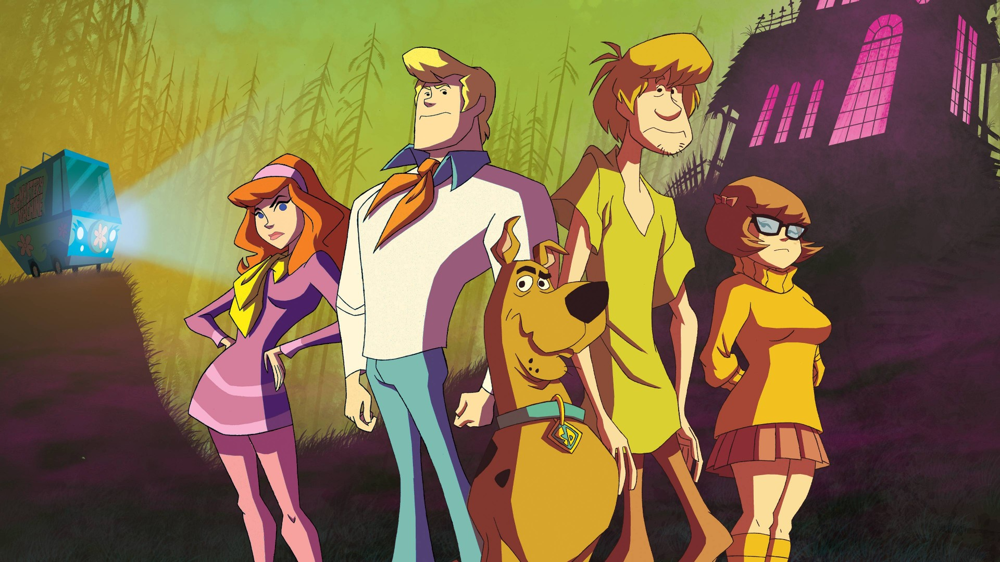

Scooby-Doo (often written as Scooby-Doo!) is an American media franchise created in 1969 by writers Joe Ruby and Ken Spears through their animated series, Scooby-Doo, Where Are You!, for Hanna-Barbera. The series features four teenagers: Fred Jones, Daphne Blake, Velma Dinkley, and Shaggy Rogers, and their talking Great Dane, Scooby-Doo, who solve mysteries involving supposedly supernatural creatures through a series of antics and missteps, while traveling in a brightly colored van called the Mystery Machine
